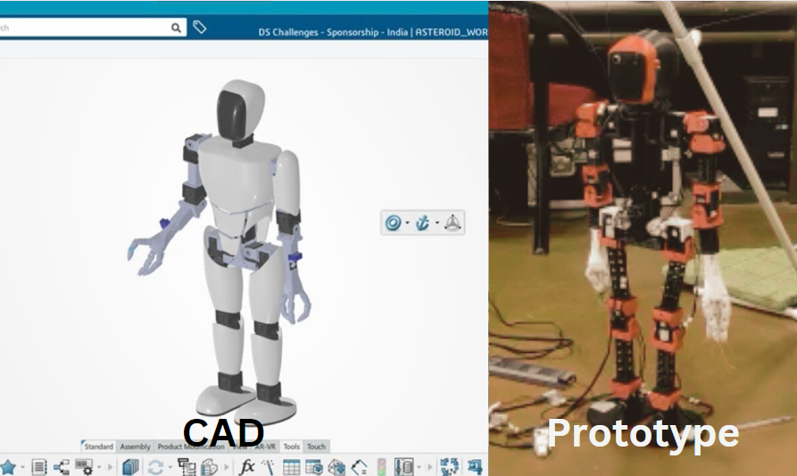

Asteroid: The Humanoid Robot
What:
Asteroid is a 19-DOF humanoid robot designed as a functional tool for human interaction and a platform for studying bipedal locomotion and robotics research. The project focuses on developing advanced capabilities for humanoid robotics, aiming to enhance human-robot interaction and experimental research in locomotion studies.
How:
The robot features:
- 19 Degrees of Freedom: Enables complex movements and interactions similar to human capabilities.
- 3D Printing Technology: Entirely manufactured using 3D printing technology within the Product Innovation Lab for flexibility and rapid prototyping.
The development process involved:
- Design: Iterative design processes to optimize humanoid form and function for experimental studies.
- Development: Integration of 3D printed components and electronic systems for robust performance.
- Testing: Evaluation of locomotion capabilities and human-robot interaction functionalities in various environments.
Results:
Asteroid demonstrates:
- Functional Human-Robot Interaction: Capable of interacting with humans in dynamic environments.
- Bipedal Locomotion: Provides a platform for studying and improving bipedal locomotion techniques and robotic control.
The project underscores advancements in humanoid robotics, offering insights into human-robot collaboration and experimental locomotion studies.